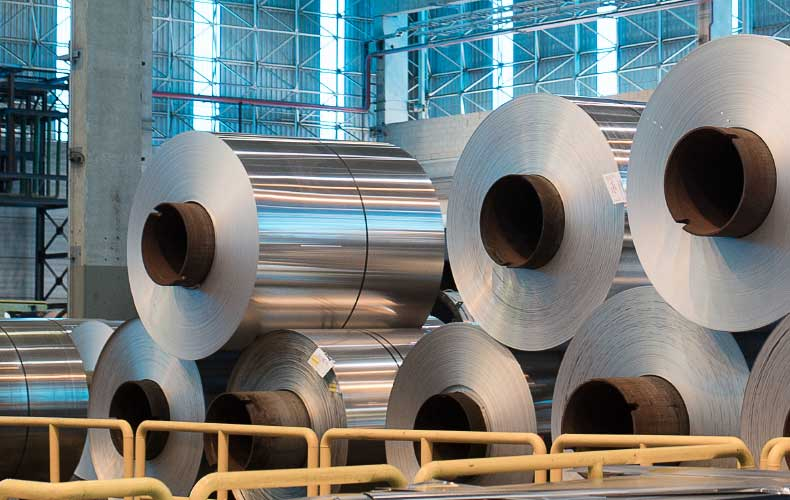
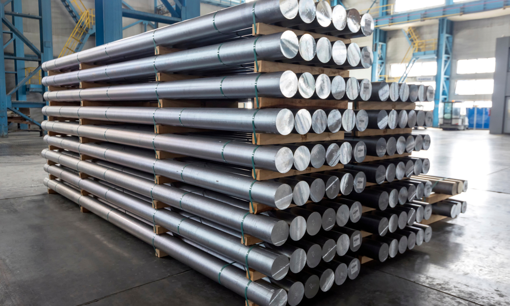
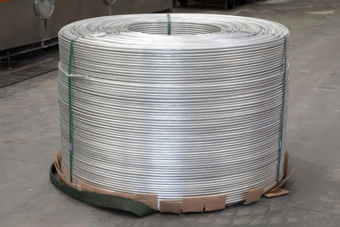

Mercado e Produtos
O Alumínio inspira nossa flexibilidade na busca de soluções para os desafios
mais complexos da sociedade.
PRODUTOS
Folha
Lingote
Tarugo
Vergalhão

Folhas
As Folhas de Alumínio CBA estão nas embalagens, tampas e membranas, trazendo
praticidade, resistência e proteção para alimentos e produtos farmacêuticos.
São amplamente utilizadas em trocadores de calor, aplicações em veículos,
refrigeração e sistemas de ar condicionado.

Lingote
Produzimos lingotes destinados à refusão, utilizados como matéria-prima em
indústrias de fundição, laminação e desoxidação. Os lingotes CBA são obtidos
a partir da solidificação do alumínio em moldes permanentes, chamados
coquilhas, com resfriamento controlado.

Tarugo
Os tarugos fabricados pela CBA apresentam melhor acabamento superficial e
estrutura interna mais fina e uniforme do que os convencionais. Utilizamos a
técnica de air-casting Wagstaff AirSlip®, com tratamentos de
desgaseificação, filtragem e refino de grãos.

Vergalhao
Os vergalhões CBA são usados para fazer cabos e fios. Fabricamos vergalhões
usando o processo Properzi de fundição centrífuga, que fornece uma seção
transversal aproximadamente circular. No processo produtivo, o alumínio
líquido é transformado em barras, comprimido no processo de laminação e
depois enrolado.